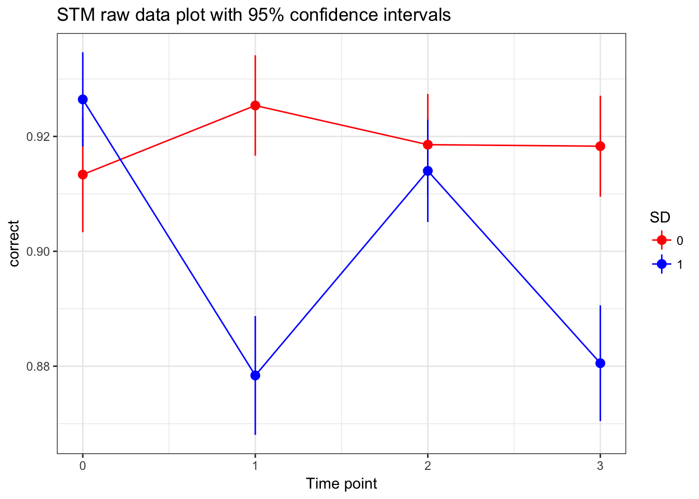
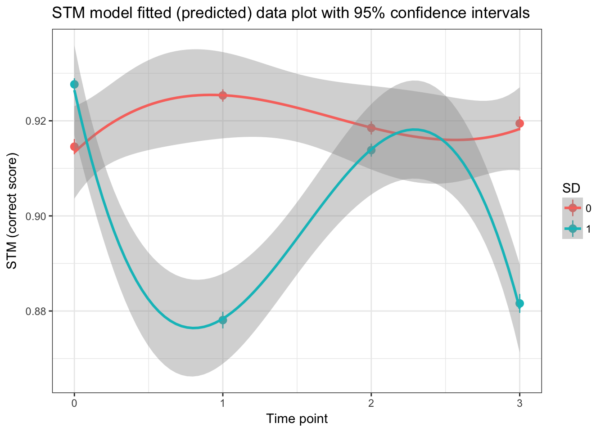

# assessing the best time polynomial
model.3a<-glmer(correct~1 + (1|ID), data=STM_Complete_TIDY, family=binomial)
model.3b<-glmer(correct~time + (1|ID), data=STM_Complete_TIDY, family=binomial)
model.3c<-glmer(correct~time + I(time^2) + (1|ID), data=STM_Complete_TIDY, family=binomial)
model.3d<-glmer(correct~time + I(time^2) + I(time^3) + (1|ID), data=STM_Complete_TIDY, family=binomial)
anova(model.3a, model.3b, model.3c,model.3d) #Cubic effect (model.3d) is best## Data: STM_Complete_TIDY
## Models:
## model.3a: correct ~ 1 + (1 | ID)
## model.3b: correct ~ time + (1 | ID)
## model.3c: correct ~ time + I(time^2) + (1 | ID)
## model.3d: correct ~ time + I(time^2) + I(time^3) + (1 | ID)
## Df AIC BIC logLik deviance Chisq Chi Df Pr(>Chisq)
## model.3a 2 17455 17472 -8725.6 17451
## model.3b 3 17443 17468 -8718.5 17437 14.2068 1 0.0001638 ***
## model.3c 4 17445 17478 -8718.4 17437 0.1867 1 0.6656512
## model.3d 5 17426 17468 -8708.2 17416 20.4031 1 6.273e-06 ***
## ---
## Signif. codes: 0 '***' 0.001 '**' 0.01 '*' 0.05 '.' 0.1 ' ' 1# assessing the best random effects term (taking just a linear effect of time)
model.4a<-glmer(correct~time + I(time^2) + I(time^3) + (1|ID), data=STM_Complete_TIDY, family=binomial)
model.4b<-glmer(correct~time + I(time^2) + I(time^3) + (time|ID), data=STM_Complete_TIDY, family=binomial)## Warning in checkConv(attr(opt, "derivs"), opt$par, ctrl = control
## $checkConv, : Model failed to converge with max|grad| = 0.00361877 (tol =
## 0.001, component 1)model.4c<-glmer(correct~time + I(time^2) + I(time^3) + (time+I(time^2)|ID), data=STM_Complete_TIDY, family=binomial)## Warning in checkConv(attr(opt, "derivs"), opt$par, ctrl = control
## $checkConv, : Model failed to converge with max|grad| = 0.0377106 (tol =
## 0.001, component 1)#model.4d<-glmer(correct~time + I(time^2) + I(time^3) + (time+I(time^2)+ I(time^3)|ID), data=STM_Complete_TIDY, family=binomial)
anova(model.4a,model.4b, model.4c) #Quadratic/cubic random effects is best, but sig. convergence problem and takes SO long to run. let's go with quadratic## Data: STM_Complete_TIDY
## Models:
## model.4a: correct ~ time + I(time^2) + I(time^3) + (1 | ID)
## model.4b: correct ~ time + I(time^2) + I(time^3) + (time | ID)
## model.4c: correct ~ time + I(time^2) + I(time^3) + (time + I(time^2) |
## model.4c: ID)
## Df AIC BIC logLik deviance Chisq Chi Df Pr(>Chisq)
## model.4a 5 17426 17468 -8708.2 17416
## model.4b 7 17386 17444 -8685.8 17372 44.803 2 1.867e-10 ***
## model.4c 10 17346 17429 -8662.9 17326 45.807 3 6.234e-10 ***
## ---
## Signif. codes: 0 '***' 0.001 '**' 0.01 '*' 0.05 '.' 0.1 ' ' 1#additing in variables can that explain intercept and slope variability
model.6a<-glmer(correct~time + I(time^2) + I(time^3) + (time|ID), data=STM_Complete_TIDY, family=binomial)## Warning in checkConv(attr(opt, "derivs"), opt$par, ctrl = control
## $checkConv, : Model failed to converge with max|grad| = 0.00361877 (tol =
## 0.001, component 1)model.6b<-glmer(correct~time + I(time^2) + I(time^3) +SD + (time|ID), data=STM_Complete_TIDY, family=binomial)
anova(model.6a,model.6b) #SD predicts intercept :(## Data: STM_Complete_TIDY
## Models:
## model.6a: correct ~ time + I(time^2) + I(time^3) + (time | ID)
## model.6b: correct ~ time + I(time^2) + I(time^3) + SD + (time | ID)
## Df AIC BIC logLik deviance Chisq Chi Df Pr(>Chisq)
## model.6a 7 17386 17444 -8685.8 17372
## model.6b 8 17381 17448 -8682.6 17365 6.389 1 0.01148 *
## ---
## Signif. codes: 0 '***' 0.001 '**' 0.01 '*' 0.05 '.' 0.1 ' ' 1model.6c <-glmer(correct~time*SD + I(time^2) + I(time^3) + (time|ID), data=STM_Complete_TIDY, family=binomial)## Warning in checkConv(attr(opt, "derivs"), opt$par, ctrl = control
## $checkConv, : Model failed to converge with max|grad| = 0.04827 (tol =
## 0.001, component 1)anova(model.6a,model.6c) #SD explains linear effect of time## Data: STM_Complete_TIDY
## Models:
## model.6a: correct ~ time + I(time^2) + I(time^3) + (time | ID)
## model.6c: correct ~ time * SD + I(time^2) + I(time^3) + (time | ID)
## Df AIC BIC logLik deviance Chisq Chi Df Pr(>Chisq)
## model.6a 7 17386 17444 -8685.8 17372
## model.6c 9 17378 17453 -8680.3 17360 11.065 2 0.003957 **
## ---
## Signif. codes: 0 '***' 0.001 '**' 0.01 '*' 0.05 '.' 0.1 ' ' 1model.6d <- glmer(correct~time*SD + I(time^2)*SD + I(time^3) + (time|ID), data=STM_Complete_TIDY, family=binomial)## Warning in checkConv(attr(opt, "derivs"), opt$par, ctrl = control
## $checkConv, : Model failed to converge with max|grad| = 0.0586089 (tol =
## 0.001, component 1)anova(model.6a,model.6d) #SD explains quadratic effect of time## Data: STM_Complete_TIDY
## Models:
## model.6a: correct ~ time + I(time^2) + I(time^3) + (time | ID)
## model.6d: correct ~ time * SD + I(time^2) * SD + I(time^3) + (time | ID)
## Df AIC BIC logLik deviance Chisq Chi Df Pr(>Chisq)
## model.6a 7 17386 17444 -8685.8 17372
## model.6d 10 17377 17460 -8678.4 17357 14.793 3 0.002002 **
## ---
## Signif. codes: 0 '***' 0.001 '**' 0.01 '*' 0.05 '.' 0.1 ' ' 1model.6e <- glmer(correct~time*SD + I(time^2)*SD + I(time^3)*SD + (time|ID), data=STM_Complete_TIDY, family=binomial)## Warning in checkConv(attr(opt, "derivs"), opt$par, ctrl = control
## $checkConv, : Model failed to converge with max|grad| = 0.0525941 (tol =
## 0.001, component 1)anova(model.6a,model.6e) #SD explains cubic effect of time## Data: STM_Complete_TIDY
## Models:
## model.6a: correct ~ time + I(time^2) + I(time^3) + (time | ID)
## model.6e: correct ~ time * SD + I(time^2) * SD + I(time^3) * SD + (time |
## model.6e: ID)
## Df AIC BIC logLik deviance Chisq Chi Df Pr(>Chisq)
## model.6a 7 17386 17444 -8685.8 17372
## model.6e 11 17348 17439 -8662.8 17326 46.024 4 2.435e-09 ***
## ---
## Signif. codes: 0 '***' 0.001 '**' 0.01 '*' 0.05 '.' 0.1 ' ' 1summary(model.6e)## Generalized linear mixed model fit by maximum likelihood (Laplace
## Approximation) [glmerMod]
## Family: binomial ( logit )
## Formula: correct ~ time * SD + I(time^2) * SD + I(time^3) * SD + (time |
## ID)
## Data: STM_Complete_TIDY
##
## AIC BIC logLik deviance df.resid
## 17347.6 17438.8 -8662.8 17325.6 29439
##
## Scaled residuals:
## Min 1Q Median 3Q Max
## -6.0915 0.2265 0.2739 0.3369 0.8267
##
## Random effects:
## Groups Name Variance Std.Dev. Corr
## ID (Intercept) 0.42460 0.6516
## time 0.04389 0.2095 -0.45
## Number of obs: 29450, groups: ID, 163
##
## Fixed effects:
## Estimate Std. Error z value Pr(>|z|)
## (Intercept) 2.55572 0.10564 24.192 < 2e-16 ***
## time 0.36647 0.25215 1.453 0.146
## SD 0.13993 0.14156 0.988 0.323
## I(time^2) -0.30175 0.21700 -1.391 0.164
## I(time^3) 0.06158 0.04717 1.306 0.192
## time:SD -2.02049 0.32852 -6.150 7.74e-10 ***
## SD:I(time^2) 1.65548 0.28479 5.813 6.14e-09 ***
## SD:I(time^3) -0.34912 0.06237 -5.598 2.17e-08 ***
## ---
## Signif. codes: 0 '***' 0.001 '**' 0.01 '*' 0.05 '.' 0.1 ' ' 1
##
## Correlation of Fixed Effects:
## (Intr) time SD I(t^2) I(t^3) tim:SD SD:I(^2
## time -0.363
## SD -0.726 0.267
## I(time^2) 0.198 -0.955 -0.148
## I(time^3) -0.148 0.908 0.112 -0.989
## time:SD 0.273 -0.767 -0.377 0.734 -0.698
## SD:I(tim^2) -0.150 0.728 0.210 -0.763 0.755 -0.952
## SD:I(tim^3) 0.113 -0.688 -0.158 0.749 -0.757 0.902 -0.989
## convergence code: 0
## Model failed to converge with max|grad| = 0.0525941 (tol = 0.001, component 1)STM_Complete_TIDY$SD <- as.factor(STM_Complete_TIDY$SD)
STM.final.model <- glmer(correct~time*SD + I(time^2)*SD + I(time^3)*SD + (time|ID), data=STM_Complete_TIDY, family=binomial)## Warning in checkConv(attr(opt, "derivs"), opt$par, ctrl = control
## $checkConv, : Model failed to converge with max|grad| = 0.0525941 (tol =
## 0.001, component 1)#raw data plot with 95% confidence intervals
ggplot(STM_Complete_TIDY, aes(time, correct, colour=SD)) +
stat_summary(fun.data=mean_cl_normal, fun.args=list(conf.int=0.95), geom="pointrange") +
labs(y="correct", x="Time point") +
ggtitle("STM raw data plot with 95% confidence intervals") +
theme_bw() + scale_color_manual(values=c("red", "blue")) + stat_summary(fun.y=mean, geom="line") 
#fitted model (aka predictive values) plot with 95% confidence intervals
ggplot(STM_Complete_TIDY, aes(time, correct, colour=SD)) +
labs(y="STM (correct score)", x="Time point") +
ggtitle("STM model fitted (predicted) data plot with 95% confidence intervals") +
theme_bw() + stat_summary(aes(y=fitted(STM.final.model)), fun.data=mean_cl_normal, fun.args=list(conf.int=0.95), geom="pointrange") + stat_smooth(method = "lm", formula =y ~ poly(x,3))